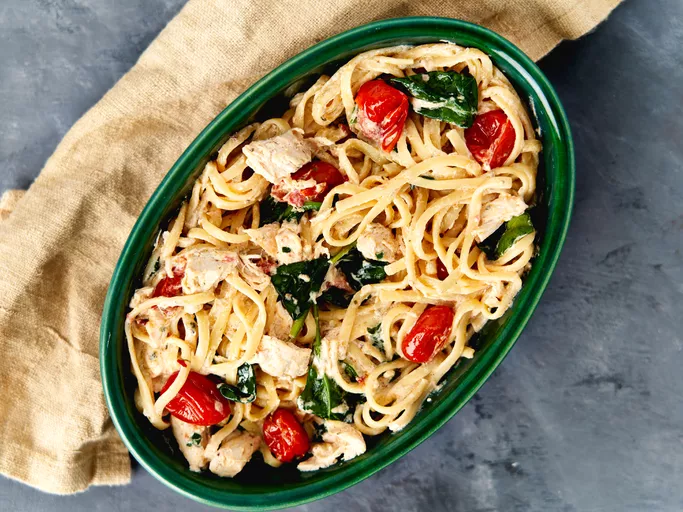

Chicke pasta

Description
This easy Boursin chicken pasta turns spreadable chive and shallot flavored cheese into a silky pasta sauce. With
chicken, baby spinach, and grape tomatoes, you'll have a complete dinner ready in half an hour.
Ingredients
- 2 (5.2 ounce) boxes shallot and chive flavored Gournay cheese
- 1 pint grape tomatoes
- 3 tablespoons olive oil
- 1 teaspoon crushed red pepper
- 12 ounces pasta
- 2 cups shredded cooked chicken
- 5 ounces baby spinach
- 1 teaspoon lemon zest (optional)
- 1 lemon, juiced (optional)
Steps
- Preheat the oven to 400 degrees F (200 degrees C). Place cheese in the center of a 9x13-inch baking dish.
Add tomatoes and drizzle with olive oil all over. Sprinkle with crushed red pepper.
- Bake in the preheated oven until tomatoes begin to burst, about 15 minutes.
- Meanwhile, fill a large pot with lightly salted water and bring to a rolling boil. Stir in pasta and return
to a boil. Cook pasta uncovered, stirring occasionally, until tender yet firm to the bite, about 6 to 12
minutes, according to package directions. Reserve 1/2 cup pasta cooking liquid before draining.
- Stir pasta into cheese mixture, along with chicken and spinach. Toss carefully until everything is well
coated and incorporated. Add lemon zest and juice and toss once more. Add reserved pasta water as needed to
attain desired consistency. Serve immediately.